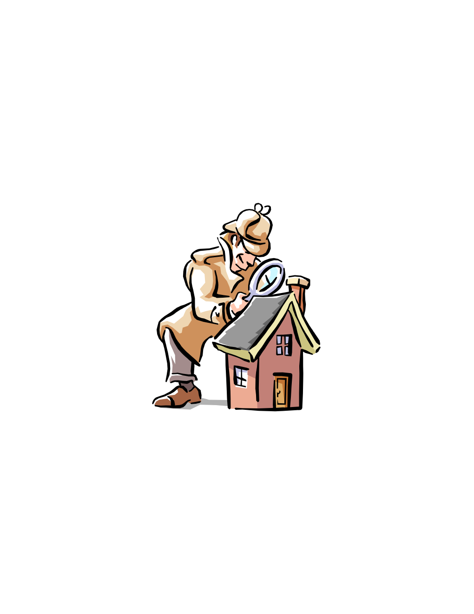
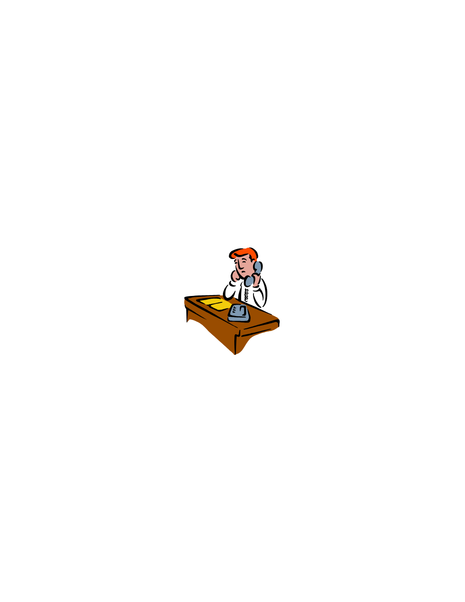
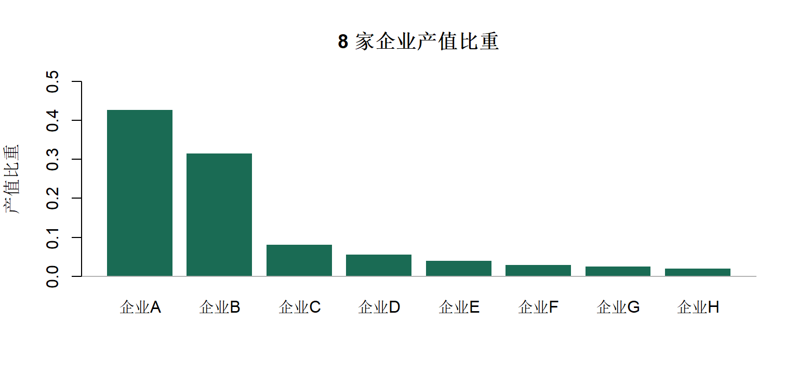

第二章 统计数据收集
《统计学原理》R 语言交互课件
# 《统计学原理》R 课件 · 公共配置 # 每个章节 qmd 通过 ```{r, file="_setup.R"} 方式引入 :: opts_chunk$ set (comment = "#>" ,collapse = TRUE ,out.width = "88%" ,fig.align = "center" ,fig.width = 8 ,fig.height = 5 ,fig.retina = 2 ,dev.args = list (family = "sans" )# 中文友好的 ggplot 主题 if (requireNamespace ("ggplot2" , quietly = TRUE )) {:: theme_set (:: theme_minimal (base_size = 14 ) + :: theme (plot.title = ggplot2:: element_text (face = "bold" ),panel.grid.minor = ggplot2:: element_blank ()# 讲义用统一调色板 <- c ("#1a6b54" , "#d97706" , "#2563eb" , "#c2410c" , "#7c3aed" , "#0891b2" )
第一节 统计数据的来源
本节首先明确统计数据搜集的概念与资料类型，介绍数据的三种获取途径与五种搜集方法，然后按范围、时间、组织方式三个角度系统梳理统计调查的种类，最后说明我国的统计调查体系与统计系统；本节末尾以”数据的载体与状态”拓展小目打开数据形态视野，并附国内外数据平台一览表供课后检索。
统计数据搜集的概念与资料的类型
定义 ：统计数据搜集是按照预定的统计研究的目的和任务，运用科学的调查方法与手段，有计划有组织地从客观实际采集数据的过程。
（一）搜集资料的类型 ：统计数据搜集的主要是原始资料，同时也包括对次级资料的搜集。
原始资料 ：指说明总体单位特征的资料；次级资料 ：指已经经过加工整理，由个体过渡到总体，能够在一定程度上说明所研究总体的统计资料，如统计年鉴、统计公告等。
调查数据与实验数据
调查数据 ：运用相应的调查方法，向客观实际搜集数字资料的过程就是统计调查。通过统计调查获得的数据就是调查数据。
实验数据 ：在实验中控制实验对象、观测整个实验过程而搜集到的数据就是实验数据。
阅读案例：历史中的”自然实验”——大楼还是大师
问题背景
对于一个大学最重要的，是物质资本还是人才，似乎并不能简单地地下结论：
一流科研人才的重要性自不必讲，但是拥有一流的研究设备、充足的科研基金也都是非常重要的。
拥有一流科研条件的院校往往更能吸引到一流的科研人才，而一流的科研人才也会争取到更多的科研基金——两者相互促进，独立地研究人才对科研的影响，或者物质资本对科研的影响越来越困难。
研究方法与数据
Waldinger 发表的论文 Bombs, Brains, and Science: The Role of Human and Physical Capital for the Creation of Scientific Knowledge （直译为《炸弹，大脑和科学：人力和物质资本在创造科学知识方面的作用》），运用自然实验的方法，分析 20 世纪德国、奥地利大学数学、物理和化学学科的相关数据，对科研活动中人才与物质资本各自所起的作用做出了回答。
作者搜集了 1926 至 1980 年间德国 35 所高校的 105 个系的年论文发表数量，论文发表数量在经过一定处理后用来衡量科研产出。最终，作者得到了 1926、1940、1950、1961、1970、1980 年六年的数据，并基于以下事实设计了自然实验。
背景事实（人才流失的冲击）
阅读案例：历史中的”自然实验”——大楼还是大师（续）
1933 年 4 月起，纳粹政府开始驱逐境内公务员系统中的犹太裔人员和政治不可靠者，这项政策迅速波及全德的高等教育体系，并造成教员离职和提前退休的高潮。
1938 年，驱逐政策扩展至奥地利。
1933 至 1940 年间，超过 1000 名科研人员遭纳粹政府驱逐，德国在物理、化学和数学领域分别失去了 15%、14.1% 和 18.7% 的研究者，并且大多数流亡学者是其专业领域的佼佼者。
二战对德国物质资本的损毁
另一方面，1939 年起，英国空军开始对德军事目标的空袭行动，对德国包括教育领域在内的诸多行业带来极大的物质资本损毁。
1939 至 1945 年间，约 135 万吨炸弹被投掷到德国本土，许多大学的科研设备、重要手稿等也遭到焚毁。
战后大学建筑的修复重建，由于资金、工匠、建筑材料的短缺和德国城市的普遍受损而被搁置。
大多数的学校被迫征募学生义务清理废墟、帮助重建。直至 20 世纪 50 年代末期，大部分学校才完成重建。
区分两种冲击的研究设计
相比于 1926 年，1940 年的论文发表主要受到人才流失的冲击；
1950 年的论文发表则受到人才流失和物质资本损毁的双重影响。
通过一定的技术手段，作者就可以在数据上将人才流失与物质资本损毁的影响区别开来独立研究；
再结合 1961、1970、1980 年的数据，还可以分析两种影响的持续性。
阅读案例：历史中的”自然实验”——大楼还是大师（续）
本例展示了”自然实验”思想——利用历史事件造成的不同时间点上冲击来源的差异，识别并分离不同因素的影响。
研究结论与方法论启示
统计分析结果显示：
在短期中，人力资本损失造成的论文发表减少四倍于物质资本损毁的冲击；高水平研究人员的流失对论文发表的负面影响更大。
科研人员流失对论文发表存在显著的长期负影响，直到 1980 年左右才消失；
而物质资本损毁虽然也会对论文发表产生负影响，但持续时间较短，在 1950 年以后就消失了。
结论 ：二战时期德国及奥地利大学的经历表明，相比于物质资本，人才是科学知识创新中更为重要的因素。
方法论启示：
掌握自然实验的思路以及相应的统计分析方法是较为简单的；
困难的是发现自然实验，以及将自然实验与自己的研究方向结合起来，得出有益于人类知识创造的成果；
要保持敏感性，发现问题，巧妙运用自然实验，解决问题。
统计数据的五种搜集方法
1、直接观察法
定义 ：调查人员亲自到现场调查，对所需调查的现象直接观察、计数或测量，以搜集统计资料的方法。
优点 ：获得资料可靠性强，简便易行。缺点 ：只能观察到外部行为，无法说明内在动机。
课件以漫画形象——调查者手持放大镜仔细观察房屋对象——诠释直接观察法”亲临现场、实地查看”的本质，帮助学生建立对第一手资料搜集方式的感性认识。

2、采访法
调查人员根据调查提纲向被调查者逐项询问，根据被调查者的答复来搜集统计资料的一种方法。
访问调查中，“调查者”与”被调查者”两个角色之间是平等合作的关系：调查者是调查的实施方，负责提问并记录回答；被调查者是调查的对象，提供所需信息；两者以平等合作的方式完成访问，从而取得真实的调查资料。
3、报告法
是由报告单位根据原始记录和核算资料，按照统计调查机关颁发的统一的表格和要求，按一定的报送程序提供统计资料的方法。
统计数据的五种搜集方法（续）
报告式调查中，调查者（上级/统计机关）对被调查者（报告单位）存在强制、约束的自上而下关系，被调查者据此以报告的形式向调查者提供统计资料，体现了报告法依托行政隶属关系实行的特点。

4、问卷法
是以答卷形式提问，由被调查者自愿回答的一种搜集资料的方法。
5、实验法
是在所设定的特殊实验场所、特殊状态下，对调查对象进行实验以取得所需资料的调查方法。
调查数据的三种实施形态：自填式、面访式与电话式
问卷法与采访法在实施层面（问卷如何递送、访问如何进行）通常采取三种形态，各有明显的利弊：
自填式问卷调查 ：在没有调查员协助的情况下，由被调查者自己完成问卷；问卷递送方式包括调查员分发、邮寄、网络、媒体等。要求问卷结构严谨、有清楚的说明；缺点是问卷返回率比较低、不适合结构复杂的问卷、调查周期比较长、数据搜集过程中出现的问题难以及时采取调改措施。面访式问卷调查 ：调查员与被调查者面对面提问、作答。优点是可提高回答率与数据质量、能调节数据搜集所花费的时间；缺点是调查成本较高、调查过程的质量控制有一定难度。电话式问卷调查 ：通过电话向被调查者实施调查。速度快、能在短时间内完成调查、适合样本单位十分分散的情况；局限是被调查者没有电话便无法实施、访问时间不能太长、使用的问卷需要简单、被访者不愿接受时难以说服。
三种实施形态在七个特征上的对比：
调查时间
慢
中等
快捷
调查费用
低
高
低
问卷难度
要求容易
可以复杂
要求容易
有形辅助物的使用
中等利用
充分利用
无法利用
调查过程控制
简单
复杂
容易
调查员作用的发挥
无法发挥
充分发挥
一般发挥
回答率
最低
较高
一般
调查数据的三种实施形态：自填式、面访式与电话式（续）
全面调查之一：普查
统计调查按调查的范围，分为全面调查和非全面调查两大类。全面调查 是对调查对象的所有单位一一进行调查；属于全面调查的方式有普查和全面统计报表。
（1）普查
普查是一种专门组织的一次性的全面调查。
特点 ：全面性；一次性；专门调查。任务 ：搜集重要的国情国力和资源状况的全面资料，为政府制定规划、方针政策提供依据。方式 ：建立专门机构，配备专门人员调查；利用基层单位原始记录和核算资料发表调查。原则 ：一是规定统一的标准时点；二是规定统一的普查期限；三是规定调查的项目和指标；四是选择适宜的普查时期。
组织方式示意图以”总体单位”与”调查单位”的标注说明：在普查中调查单位就是总体单位，即对全部单位进行调查、无一遗漏，因此普查取得的资料全面，但工作量较大。
（图示说明：示意图以总体单位与调查单位的对应关系直观说明普查”对全部单位进行调查”的全面性特征。）
我国已经开展的普查类型
人口普查、农业普查 ：每十年进行一次，分别于尾数为 0、7 的年份进行；经济普查 ：2004 年末进行第一次经济普查（逢 3、8 的年份进行），2023 年开展第五次全国经济普查；另外还有基建项目普查、工业普查、科技人员普查等。
以人口普查为例 ：我国历次人口普查的开展年份如下，体现了普查作为全面调查定期、有组织实施的规律：
全面调查之一：普查（续）
1953 年
第一次人口普查
1964 年
第二次人口普查
1982 年
第三次人口普查
1990 年
第四次人口普查
2000 年
第五次人口普查
2010 年
第六次人口普查
2020 年
第七次人口普查
观察可见，1990 年以后人口普查每 10 年开展一次（逢 0 的年份进行），与”尾数为 0、7 的年份进行”的普查安排相呼应，保证国情数据的连续性与可比性。
国务院决定于 2020 年开展第七次全国人口普查 ，普查标准时点为 11 月 1 日零时 。人口普查主要调查人口和住户的基本情况，内容包括：性别、年龄、民族、受教育程度、行业、职业、迁移流动、社会保障、婚姻生育、死亡、住房情况。组织实施上，国务院决定成立第七次全国人口普查领导小组，负责人口普查的组织和实施普查领导；小组办公室设在统计局，具体负责人口普查的日常组织和协调。普查是全面调查，必须统一规定标准时点，以保证资料的准确性和可比性。
例题：人口普查的”时点概念”
我国第七次人口普查，标准时间是 2020 年 11 月 1 日零时。人口普查登记的是标准时点上的人口存量，判断某人是否计入普查人口数，要看其在标准时点（11 月 1 日零时）是否存活。
例题 ：下列情况不应计算人口数的有（ACD ）（时点概念）
A. 2020 年 11 月 3 日出生的婴儿；B. 2020 年 10 月 29 日出生，但 11 月 1 日 8 时死亡的婴儿；C. 2020 年 10 月 31 日 23 时死亡的人口；D. 2020 年 10 月 29 日出生，20 时死亡的婴儿；E. 2020 年 11 月 1 日 1 时死亡的人口。
解析 ：
A：标准时点之后才出生，零时时尚不存在，不计入；
C：标准时点之前（10 月 31 日 23 时）已死亡，不计入；
D：出生后 20 时即死亡，标准时点时已不在世，不计入；
B、E：在标准时点（11 月 1 日零时）存活，应计入人口数。
重点调查与典型调查的区别
两者都是非全面调查，但调查的着眼点不同：
重点调查 ：选取一部分重要样本进行调查，这些样本在量 上占优势；典型调查 ：有目的地选取有代表性 的样本进行调查，侧重该样本质 的方面。
a. 选择对象的标准不同
典型调查选典型样本；
重点调查选择集中性的单位作为调查对象。
b. 调查目的不同
典型调查的目的是认识事物的本质和规律，侧重定性分析 ；
重点调查进行定量调查 。
R 实践 · 用 sample() 体验不同的抽样组织方式
以某专业 120 名学生 （三个班各 40 人）为总体，各抽 12 人：
set.seed (2026 )<- data.frame (= 202601 : 2026120 ,= rep (c ("一班" , "二班" , "三班" ), each = 40 )# 1. 简单随机抽样：人人机会均等，全凭"抽签" <- students$ 学号[sample (students$ 学号, 12 )]sort (srs)#> [1] 423926 479917 494120 639872 712687 999046 1181706 1193279 1476284 #> [10] 1531470 1584927
# 2. 等距（系统）抽样：每隔 N/n = 10 人抽 1 人，起点随机 <- sample (10 , 1 )<- students$ 学号[seq (start, 120 , by = 10 )]# 3. 分层抽样：每班固定抽 4 人，保证样本结构与总体一致 <- unlist (tapply (students$ 学号, students$ 班级, sample, size = 4 ))table (方式 = c (rep ("简单随机" , 12 ), rep ("等距" , 12 ), rep ("分层" , 12 )),= students$ 班级[match (c (srs, sys, str), students$ 学号)])#> 班级 #> 方式 一班 三班 二班 #> 分层 4 4 4 #> 等距 4 4 4 #> 简单随机 4 4 3
简单随机抽样三个班抽中的人数波动很大 （随机性）；分层抽样则严格每班 4 人。当总体内部差异明显时，分层抽样能用同样多的样本获得更精确的推断——这是第五章抽样误差理论的先声。
经常性调查与一次性调查
按调查时间是否连续，统计调查分为：
1. 经常性调查 ：指随着被研究现象的变化，连续不断地进行登记，以反映现象在一段时间内的全部发展过程。如工业产品产量、商品销售量等。
2. 一次性调查 ：对时点现象进行定期或不定期的调查登记，以反映现象在某一时点上的发展水平或规模。
区分两类调查的关键在于现象的性质——时期现象（如产量、销量）采用经常性调查；时点现象（如人口数、库存量）采用一次性调查。
R 实践 · 重点单位：少数企业占了多大比重
重点调查不抽签，而是抓标志量集中 的少数单位。下面 8 家企业的产值里，先看前两家占了多少。
<- c (420 , 310 , 80 , 55 , 40 , 30 , 25 , 20 ) # 万元 <- output / sum (output)<- data.frame (= paste0 ("企业" , LETTERS[seq_along (output)]),= output,= round (share, 3 ),= round (cumsum (share), 3 )#> 企业 产值 比重 累计比重 #> 1 企业A 420 0.429 0.429 #> 2 企业B 310 0.316 0.745 #> 3 企业C 80 0.082 0.827 #> 4 企业D 55 0.056 0.883 #> 5 企业E 40 0.041 0.923 #> 6 企业F 30 0.031 0.954 #> 7 企业G 25 0.026 0.980 #> 8 企业H 20 0.020 1.000
barplot (share, names.arg = firm$ 企业, col = "#1a6b54" , border = "white" ,ylim = c (0 , 0.5 ), ylab = "产值比重" ,main = "8 家企业产值比重" )abline (h = 0 , col = "grey70" )

企业 A、B 只占单位数的 2/8，产值累计比重已约 74.5% 。调查这两家，就能掌握该行业产量的大部分——这是重点调查，不是随机抽样。把 output 改成差不多一样大，累计曲线会变平，重点单位也就不明显了。
定期报表与专门调查
按调查的组织方式不同，统计调查分为：
1. 定期报表 ：指基层单位和企业，根据一定的原始记录或统计台帐，按照一定的统计表式、统一的指标、统一的报送时间和程序，自下而上定期向上级统计机关报告基本统计资料的一种统计调查方式方法。
2. 专门调查 ：专门调查是为了研究某些专门问题或为某一目的而对某些社会经济现象专门组织的登记和调查。
注意 ：专门调查又多为一次性调查。
课堂练习：调查方式与搜集方法的辨析
1. 调查几个主要产棉区，就可以了解我国棉花生产的基本情况，这种调查方式属于（B ）。
A. 典型调查
B. 重点调查
C. 普查
D. 抽样调查
解析：只调查客观上在总体中占绝大比重的少数重点单位（主要产棉区），属于重点调查。
2. 了解某工业企业期末的原材料库存量，调查人员亲自盘点库存，这种搜集资料的方法是（B ）。
A. 实验法
B. 直接观察法
C. 采访法
D. 报告法
解析：调查人员亲自到现场对盘点对象进行清点计数，属于直接观察法。
3. 下列调查中，适合用普查方式的是（D ）。
A. 了解一批炮弹的杀伤半径B. 某企业检查其生产的日光灯的寿命C. 了解长江中鱼的种类D. 了解某班学生对某知识点的掌握情况
解析 ：A、B 均具有破坏性（炮弹试爆、日光灯寿命测试需毁坏产品），只能用抽样调查；C 的调查对象（长江中的鱼）数量庞大且难以逐一清点，适合抽样调查；D 的调查对象是一个班级的学生，总体范围小、便于逐一调查，且无破坏性，适合采用普查方式。
结论 ：普查适用于总体范围小、无破坏性、需要全面准确信息的调查；抽样调查适用于破坏性试验、总体庞大的情况。
我国的统计调查体系
我国统计调查方法体系改革的目标模式：建立以周期性普查为基础，以经常性的抽样调查为主体，以必要的统计报表、重点调查、综合分析等为补充 ，搜集、整理基本统计资料的统计调查方法体系模式。
要点解析：
基础 ——周期性普查；主体 ——经常性的抽样调查；补充 ——必要的统计报表、重点调查、综合分析等。
我国的统计系统（统计的组织系统）
我国的统计系统由以下三部分组成：
一、国家综合统计系统 ：由国家统计局和地方各级政府的统计机构组成，是我国国家统计组织的主系统 。二、业务部门专业统计系统 ：由中央及地方各级业务部门的统计机构组成。各级业务部门专业统计机构在业务上受国家统计或同级地方政府统计机构的指导，组织执行本部门的各项统计任务。三、基层单位统计组织 ：是我国统计系统的基础 。乡、镇政府是国家的基层行政组织，需要建立专门的统计机构或配备专职统计人员。乡、镇统计员在业务上受县人民政府统计机构的领导。
拓展小目：数据的载体与状态
前文按”来源”把数据分为调查数据与实验数据、原始资料与次级资料。面对真实的研究工作，还需要进一步追问两个问题：数据以什么形态存在 （载体）？数据处于什么加工程度 （状态）？
（一）数据来源的完整谱系
按产生数据的研究方法，数据分为观察数据、调查数据、实验数据——与本章前文一致；按具体收集方式，又可分为问卷数据、访谈数据、文献数据与痕迹数据 。痕迹数据指人们行为留下的记录（购物订单、上网日志、刷卡记录等），是大数据的主要来源。注意”痕迹数据”不等于”痕迹证据”：前者是原始记录，后者是经研究者甄别、可用于论证的材料。
此外，在获得数据的同时，还应同步获得一份”记录数据获得过程”的数据——日志数据 ：记录数据从哪里来、在什么情况下得到、基本特征是什么（文字有多少页、图片有多少张）。日志是数据可信度的”出生证明”。
（二）数据的载体：数字化不等于数值化
从是否数字化 看：数字化数据／非数字化数据；
从是否数值化 看：数值数据／非数值数据；
从具体形态 看：文本（访问记录、纸质文书）、图片（照片、底片）、音频（访谈录音）、视频（访谈录像）、实物（出土文物、建筑）五类载体。
课堂思考两问（可作讨论题）：
拓展小目：数据的载体与状态（续）
CFPS 中国家庭追踪调查
北京大学中国社会科学调查中心（ISSS）
全国家庭户追踪调查
注册申请
CHARLS 中国健康与养老追踪调查
北京大学 ISSS
45 岁及以上人群健康与养老追踪
注册申请
CGSS 中国综合社会调查
中国人民大学中国调查与数据中心（NSRC）
综合社会状况连续调查
注册申请
CEPS 中国教育追踪调查
中国人民大学 NSRC
初中阶段教育追踪
注册申请
CLASS 中国老年社会追踪调查
中国人民大学 NSRC
老年社会状况追踪
注册申请
国家统计局数据发布库
国家统计局
月度/季度/年度官方统计数据与统计公报
免费查询
中国知网统计年鉴数据库
中国知网（校园图书馆入口）
历年中央与地方统计年鉴
校内订阅
ICPSR
美国校际政治与社会研究数据联盟（驻密歇根大学）
全球最大规模的学术数据存档之一
注册申请
GSS 综合社会调查
美国芝加哥大学 NORC
美国综合社会调查
公开获取
PSID 收入动态追踪调查
美国密歇根大学
美国家庭收入动态面板
注册申请
HRS 健康与退休调查
美国密歇根大学
51 岁以上人群健康与退休（始于 1990 年代初）
注册申请
Understanding Society
英国埃塞克斯大学
英国家庭追踪调查（“理解社会”）
注册申请
拓展小目：数据的载体与状态（续）
此外，中国疾病预防控制中心（CDC）发布慢病、流行病等健康监测数据，适合公共卫生方向的选题。
时效性提示 ：检索二手数据时，优先使用校内可用渠道（图书馆数据库、EPS 数据平台、国泰安 CSMAR 等）与官方免费渠道（国家统计局数据发布库）；部分课件列举的境外搜索引擎与网络论坛渠道存在访问受限、权限与合规问题，不在本课程推荐之列。引用年鉴等正式出版物数据，应通过图书馆等正规途径获取并标注出处。
第二节 统计调查方案的设计
“凡事预则立”——统计调查必须先设计、后实施。本节按照”目的→对象→内容→时间→方法→组织”的顺序，介绍统计调查方案设计的六个组成部分；节末的阅读框进一步把”确定调查目的”延伸为研究设计中的 problem→question 训练。
二、确定调查对象、调查单位与填报单位（Respondent and Survey unit）
（1）调查对象 ：指所要调查的现象总体 ，即统计总体 。
例 ：人口普查的调查对象为：具有中国国籍并在中国境内常住的自然人。
（2）调查单位 ：调查研究的总体单位（个体） ，是调查内容的承担者。
两者的关系 ：调查对象由许多性质相同的调查单位组成；调查对象是总体，调查单位是构成总体的个体。示意图画出由许多个体组成的调查对象（总体），并从中确定调查单位（个体），直观说明总体与个体的构成关系。
（图示说明：示意图画出由许多笑脸个体组成的调查对象（总体），并从中抽取一个椭圆代表调查单位（个体），直观说明总体与个体的构成关系。）
（3）填报单位 ：按照规定日期、表式，负责提供统计资料的单位，即填写、上报统计资料的单位。
调查单位与填报单位的关系 ：两者不一定一致——
一致的情形 ：想要了解某市工业企业的经济效益，则该市的工业企业为调查对象，每个工业企业是调查单位，填报单位也是每个工业企业；不一致的情形 ：如果了解一个市的汽车状况，汽车为调查单位，拥有汽车的单位或个人是填报单位。
四、确定调查时间和调查期限
确定调查的时间有两方面的涵义：
1、规定资料所属的时间
如果调查的是时期现象 ，资料所属时间是调查规定的起止时间 ；
如果是时点现象 ，则是统一规定的标准时点 。
2、规定调查期限
注意区分”资料所属时间”（资料反映的现象所属的时间范围或时点）与”调查期限”（进行调查工作所经历的时间），两者涵义不同，不可混淆。时期现象对应起止时间，时点现象对应标准时点。
例题：调查时间与调查期限的区分
概念区分 ：
调查时间 ：调查资料所属的时间（即资料所反映的时期或时点）。调查期限 ：进行调查工作的起讫时间（即收集资料工作的时间范围）。
例题 ：如果在 2017 年 1 月调查一个企业 2014 年 -2016 年上缴的利税总额。调查时间是？调查期限是？
解答 ：
调查时间：2014 年 1 月 1 日 -2016 年 12 月 31 日
调查期限：2017 年 1 月 1 日 -2017 年 1 月 31 日
教学要点 ：调查时间是资料所属的时期（三年），调查期限是实际开展调查工作的时段（一个月），二者不可混淆。
五、确定调查的组织方式和技术方法
（一）调查的组织方式 ：即数据资料来源方式，包括：
注意：在一次调查中可同时采用多种调查形式。
（二）调查的技术方法 ：指收集资料的具体方法，包括：
组织方式解决”向谁调查、调查范围如何确定”的问题；技术方法解决”用什么手段收集资料”的问题，二者需结合方案设计综合考虑。
六、确定调查的组织实施计划
在统计调查方案中，还需要明确调查机构、调查地点等问题，并对以下事项做出具体规定：
调查人员培训
文件印刷
调查资料报送办法
调查经费预算和开支办法
试点调查 ：在正式调查前，尤其对于大规模统计调查来说，最好开展试点调查，以检验方案可行性、发现问题并及时修正。
阅读框：从调查方案到研究设计——problem 到 question 的训练
本节的六要素方案回答”怎样组织一次调查”；而在更前端，研究实践还要先完成一次”翻译”——把现实中的困难（problem）转译为可研究的问题（question）。这是”确定调查目的”在研究设计中的深化。
第一步：陈述现实难点（problem） 。将难点具体化、说明其重要性、设定研究的目的与目标。例如：“X 学校的教师难以识别和指导教室里有天赋的学生”是一个现实难点；“越来越多的年轻人从事零工经济而非全职工作，但很少有人研究他们的工作经历”也是一个现实难点。
第二步：提出研究问题（question） 。把难点改写为一个可以通过数据回答的问题，如：“X 学校的教师可以使用哪些实用方法来更好地识别和指导有天赋的孩子？”“影响年轻人参与零工经济决策的主要因素是什么？”
好问题的六条基本要求 ：专注于单个问题；可使用主要和/或次要来源进行研究；在时限和现实限制条件下可行；具体到足以彻底回答；足够复杂、能在论文范围内得出有深度的答案；与学习或社会有广泛相关性。
七类研究问题”公式” ：
阅读框：从调查方案到研究设计——problem 到 question 的训练（续）
与本节方案的衔接 ：好问题一旦确立，六要素便顺次展开——问题决定调查目的（Why），概念与人群决定调查对象与单位（Who），变量清单决定调查提纲（What），可行性与时限决定调查时间与组织方式。做课程调查作业时，可先用本阅读框打磨问题，再套用六要素写方案。
第三节 统计调查问卷的设计
调查表与调查问卷是采集第一手资料的两种基本工具。本节先讲调查表的编制，再按”开头—背景资料—主体—结尾”的结构系统讲解问卷设计的方法与技巧，并配以完整的问卷案例供研读；在”提问项目的设计技巧”之后，专设”坏题改写”课堂练习，把设计技巧转化为可操作的改题能力。
一、调查表：单一表与一览表
定义 ：为了便于填写和重新汇总，通常把调查项目按合理的顺序排在表格里，这种表达调查项目的表格叫调查表，它是统计调查的重要工具。
分类 ：
1. 单一表 ：每张表只登记一个调查单位，可容纳较多标志项目，适用于调查项目较多、每单位资料较丰富的调查。如：体检表。例如职工个人情况调查表：
2. 一览表 ：每张表可登记多个调查单位，便于汇总和比较，适用于调查项目较少、需同时登记多个调查单位的调查。如：全国人口普查登记表、学生联系方式采集表。例如体格检查一览表：
二、调查问卷的基本结构
调查问卷的基本结构一般由四部分 组成：
（一）开头部分 ：问卷标题；卷首语（说明词）；填写说明；调查甄别内容。开头部分用于说明调查目的并筛选合适对象。（二）被调查者背景资料 。（三）主体部分 ：问题和答案。主体部分是问卷核心，承载所有调查问题与备选答案。（四）结尾部分 ：被访者联系方式记录；调查过程记录。结尾部分用于记录访问信息，便于后续核查与回访。
开头部分之一：问卷标题与卷首语
1、问卷标题——调查研究的主题
要求 ：简明扼要，引起兴趣。
标题的格式一般是：调查时间 + 被调查地区或单位名称 + 调查任务关键词 。例：
“关于XXX年XX大学毕业生就业情况的调查问卷”
“—–XX年XX市居民住房状况调查”
2、卷首语（说明词）
说明调查者的身份、调查内容、调查目的、调查意义、抽样方法、保密措施和致谢等。
要求 ：
简洁、扼要、不超过三百字；
问候语的语气应该亲切、诚恳而有礼貌，吸引被调查者。
案例一：调查访问开场白（封面信）的写作范例
这是一份规范的问卷调查开场白，展示了访问员开场说明应包含的全部要素：
尊敬的先生/女士：
上午好！
我叫刘东，是四川农业大学的学生。
我们正在进行一项关于手机通信质量方面的市场调研。
您的回答将有助于厂家进一步改善产品品质和服务质量。
您的资料只供研究参考，绝不公开。
在完成访问后，我们将赠予您一份纪念品以示感谢。
现在，我们麻烦您抽 5 分钟时间回答问题吗？
开场白构成要素解析 ：
上午好！
问候语
我叫刘东，是四川农业大学的学生。
身份说明
我们正在进行一项关于手机通信质量方面的市场调研。
调查主题
您的回答将有助于厂家进一步改善产品品质和服务质量。
调查用途
您的资料只供研究参考，绝不公开。
保密措施
在完成访问后，我们将赠予您一份纪念品以示感谢。
礼品信息
现在，我们麻烦您抽 5 分钟时间回答问题吗？
访问邀请
教学要点 ：一份合格的开场白应依次包含问候语、身份说明、调查主题、调查用途、保密措施、礼品信息和访问邀请七个要素，以取得被访者的信任与配合。
开头部分之二：填写说明
填写说明示例：
为使调研顺利进行，请您关注下面的填写说明：
1）本问卷已将所有需要回答的问题编号，您只需按照卷面上表明的要求回答即可，请在您选择的答案对应的符号前画 √，不论单选或多选。
2）有些题目如果没有您想选的答案需要您填写，请直接填写在横线上。
（二）被调查者背景资料
在问卷设计中，除调查主题问题外，通常还需设置被调查者的背景资料（人口统计学特征）题项，以便后续进行分组统计与交叉分析。以下为一份背景资料题的实际示例：
您的性别
1 男 2 女
您的年龄
____周岁（填空）
您的婚姻状况
1 已婚 2 未婚
您的家庭人口
____人（填空）
您的教育程度
1 初中及以下；2 高中中专；3 大专；4 本科及以上
您的职务
1 高级管理人员；2 中级管理人员；3 普通工作人员；4 无职务
职业分类（19 类） ：01 退休/离休人员；02 党政机关干部；03 教育工作者；04 财经人员；05 医护人员；06 金融从业人员；07 科技人员；08 工商/企业管理人员；09 法律工作者；10 工人；11 公司职员；12 大中学生；13 商业/服务业从业人员；14 自由职业者；15 个体经营者；16 军人/警察；17 私营企业人员；18 待业或无业人员；19 其它（请列明）______。
教学要点 ：背景资料题多采用封闭型（选项式）提问并预先编码（如 1、2、01、02……），便于数据处理；少数项（年龄、家庭人口、其它职业）采用填空式开放提问。
（三）主体部分：封闭式问题与开放式问题
问卷主体部分的核心是问题的设计。按照提问方式的不同，问题可分为两大类：封闭式问题和开放式问题 。
封闭式问题是研究者事先给出固定的备选答案，由被调查者从中选择；
开放式问题则不提供备选选项，由被调查者自由作答。
两类问题各有优劣，在问卷主体设计中需根据调查目的合理选用与搭配。
以”您认为吸烟有哪些害处？“为例，比较两种提问方式：
封闭式问题 （给出固定备选答案，由被调查者从中选择）：
① 危害自身健康 ② 影响他人健康 ③ 浪费钱财 ④ 容易引起火灾 ⑤ 破坏家庭团结 ⑥ 其他______
开放式问题 ：同一问题”您认为吸烟有哪些害处？“，不给出备选答案，由被调查者自由作答。
封闭式问题
容易控制，但不易全面
开放式问题
不易控制，但内容丰富
问卷示例研读：吸烟情况调查问卷
以下是一份关于吸烟情况的调查问卷，并用批注说明各题目对应的调查目的：
问题1．您是否吸烟（如果选②，则跳过后面的题目）
批注：本题目的是调查单位中吸烟人所占比例 。
问题2．您每天大约吸多少支烟
① 5支以下 ② 5-10支 ③ 10-15支 ④ 15-20支 ⑤ 20支以上
批注：本题目的是了解吸烟人群日吸烟数量情况 。
问题3．您的吸烟历史大约有多长
① 1年以下 ② 1-5年 ③ 5-10年（以上）
批注：本题目的是了解吸烟人群吸烟历史情况 。
问题4．您是否认为吸烟有害健康（请写出理由）
批注：本题目的是了解调查对象对吸烟的看法 （开放性问题）。
教学要点 ：问卷每一道题都应服务于明确的调查目的——过滤题（跳答设计）用于划分总体与子样本，选择题用于获取可分组的数量资料，开放题用于收集意见性资料。
提问项目的设计技巧
设计问卷的提问项目时，应注意以下六点：
1. 内容尽可能短 ：完成问卷的时间一般 < 10 分钟。
2. 用词要准确、通俗 ：避免专业术语，避免抽象内容。例如：“您所在的项目小组的内聚性有多高？”——什么是”内聚性”（cohesion）？除非有一个明确的定义写在问卷中，调查对象不会知道你在问什么。
3. 一项提问只包含一项内容 ：不要把多个问题合并成一条提问。
4. 避免诱导性提问 ：提问不应带有倾向性引导，否则会暗示受访者顺着提问者的观点作答。例如：“海尔是中国家电第一品牌，你喜欢吗？”——这一提问先给出”第一品牌”的判断，再询问喜好，属于典型的诱导性提问。
5. 避免否定形式的提问 ：否定式提问容易使受访者产生理解偏差。例如：“你觉得大学的生活不开心吗？”
6. 避免敏感性问题 ：涉及个人隐私或敏感内容的问题容易引起受访者反感或拒答。例如：收入、党员身份等。
课堂练习：坏题改写训练（续）
原题 ：请问您现在使用的手机是智能手机吗？A. 是 B. 不是
点评 ：看似考虑周全，实则默认了受访者都有手机——没有手机的人无选项可选。
试改 ：____________________
参考改法 ：增加”C. 没有手机”。经验法则：对可能出现多种情形的问题，加”其他／以上情况都有”选项兜底，保证人人有选。
练习二：选项不符合生活惯例
原题 ：您去超市购物的频率是？A. 一天一次 B. 五天一次 C. 十天一次 D. 有优惠时才去 E. 没有规律
点评 ：普通人不会记自己”五天去一次”还是”十天去一次”，选项脱离生活口径。
试改 ：____________________
参考改法 ：改为 A. 一天一次 B. 一周一次 C. 半个月一次 D. 一个月一次 E. 有优惠时才去 F. 没有规律。经验法则：问卷定稿前，先请几位未参与设计、文化水平不同的人试填。
练习三：重点不明
原题 ：您最希望超市扩展的业务是？A. 机票、酒店预订 B. 水电费查询 C. 免费 Wi-Fi 服务 D. 移动支付方式 E. 其他
点评 ：选项看起来更像多选题，而调查者想了解的是”最希望”（单选），作答口径不明。
试改 ：____________________
课堂练习：坏题改写训练（续）
参考改法 ：在题干中把重点显式标注——“您【最希望】超市扩展的业务是？（单选）”。经验法则：必要时用加粗、【】或着重号标出题眼。
练习四：答案选项相互重叠
原题 ：您的职业：A. 工人 B. 知识分子 C. 职员 D. 小商贩 E. 农民 F. 领导干部 G. 学生 H. 私人企业主
点评 ：选项两两交叉——某研究所领导既是”领导干部”又是”知识分子”；“知识分子”本身并非一种职业；目前无工作者无选项可选。
试改 ：____________________
参考改法 ：改用互斥且穷尽的职业分类框架作选项（可参照本章背景资料题的 19 类职业分类，末设”其他（请列明）“与”目前无职业”）。经验法则：常识性分类须经反复确认后再入卷。
练习五：超出被调查者认知范围
原题 ：请问您家属于下列哪一类家庭？A. 单身家庭 B. 核心家庭 C. 主干家庭 D. 联合家庭 E. 其他家庭
点评 ：“核心家庭”“主干家庭”“联合家庭”是社会学术语，一般被调查者无从判断自家属于哪一类，选项等于没设。
试改 ：____________________
课堂练习：坏题改写训练（续）
参考改法 ：把术语还原为通俗事实——“您家同住人员情况：① 独自一人 ② 夫妻二人（或带未婚子女）③ 两代及以上同住 ④ 其他____“（研究者可据作答结果自行归类）。经验法则：把理论化、学术化、专业化的用词转换为被调查者能直接理解的语言。
（四）结尾部分
问卷的结尾部分主要包括两项内容：
1. 被访者联系方式记录
被访人姓名：
调查地点：
被访人的手机号码：
其他联络方式：
2. 调查过程记录
调查过程中有无如下情况发生：
1）在调查过程中有客人来访，但没有打断调查；
2）在调查过程中有客人来访，中断过调查（多少时间）；
3）在调查过程中被访者对调查内容有不明白的地方；
4）其他（请详细说明）；
5）在调查过程中被访者的合作情况：A、合作；B、一半；C、不合作。
结尾部分的记录便于复核调查质量、进行回访核实，是保证调查资料真实可靠的重要环节。
问卷设计综合示例：家庭消费状况调查问卷（第1～10题）（续）
题（10）您存钱的主要目的是：
1
□购买设备
4
□子女教育
2
□购买住房
5
□养老防病
3
□结婚
6
□旅游
（请按你认为的重要性在□中写位序）
教学要点 ：以上两题分别示范了填空式（比重分配） 与排序式（按重要性填位序） 问卷题型，用于收集调查对象的家庭资产结构与储蓄目的信息。
问卷设计综合示例（续）：信贷消费与背景资料（第11～15题）
（11）您是否了解现在推行的信贷消费
1、□不了解
2、□了解一点
3、□了解
4、□很了解
（12）您是否打算参加信贷消费：
（13）您信贷消费的项目是（ ） （请按第3题的编号填写）
教学要点：本页展示问卷中的跳答设计——第12题选择”不”的受访者跳过第13题；第13题为开放（填空）题，答案须按第3题的编号填写，属于问卷内部逻辑关联的设计。
（14）您是否同意下列看法：
本页展示问卷调查中测量态度的李克特量表 设计实例。被调查者需对以下 8 个关于”信贷消费”的看法，在五级选项中勾选自己的态度：很同意、同意、无所谓、很不同意（五级量表选项由左至右排列于表格上方的回答栏中，供逐题勾选）。
1
信贷消费不合中国国情
2
信贷消费是资本主义国家的做法
3
信贷消费是先甜后苦
4
借债享受有风险
5
借债消费不光彩
6
信贷消费是现代通行的做法
7
只要量力借贷，有利无害
8
发展信贷消费能促进经济增长
教学要点 ：该量表通过若干正向与反向陈述混合排列，测量受访者对信贷消费的态度倾向；回收后可对各题项赋值（如 5=很同意 … 1=很不同意），加总得到态度总分，用于后续统计分析。
问卷设计综合示例（续）：信贷消费与背景资料（第11～15题）（续）
问卷基本资料部分示例（第15题）
问卷的最后，通常需要了解受访者的基本情况进行背景信息采集：
A、您的性别： 1、□男，2、□女B、您的年龄：______周岁 C、您的文化程度： 1、□不识字或识字不多 2、□小学 3、□初中 4、□高中或中专 5、□大专或大学以上D、您家庭人口数______人
D（1）在业______人
D（2）离退休______人
D（3）失业、下岗______人
D（4）在校学生______人
E、您的职业____________（见卡片） F、职务____________
教学要点 ：性别、文化程度等分类项目采用封闭式选项（打勾选择）；年龄、人口数等数量项目采用填空式；职业调查可借助出示卡片辅助回答，体现问卷题型设计的多样性。
第四节 统计调查数据的质量
数据质量是统计调查的生命线。本节从误差来源入手，区分代表性误差与登记性误差两类，并给出控制调查误差的具体措施；在此基础上，引入社会调查”总误差”的扩展视角与应答率指标，帮助我们从教材的二元分类走向真实调查工作的全误差视野。
一、代表性误差
1、定义 ：指用样本数据进行推断时产生的随机误差。
2、产生原因 ：
（1）抽样时没有遵循随机原则； （2）样本结构与总体结构存在差异； （3）样本容量不足。
注意 ：这类误差通常无法彻底消除，但可事先进行控制。
二、登记性误差
1、定义 ：指调查过程中由于调查者或被调查者的人为因素 造成的误差。
2、产生原因 ：
调查者造成 ：调查方案有关规定不明确，导致的填报错误、抄录错误、汇总错误等；被调查者造成 ：因人为因素干扰导致的虚报或瞒报。
重要结论：这类误差可消除。
登记性误差与代表性（随机）误差不同，它源于人为因素，因此通过完善调查方案、加强审核与培训等措施可以消除。
社会调查的总误差视角：从两类误差到总误差框架（续）
统计调查总误差（以均方误 MSE 综合度量）
├── 抽样性误差（仅抽样调查存在）
│ ├── 随机抽样波动（代表性误差的主体：可计算、可事先控制）
│ └── 抽样框制作中的覆盖性问题
└── 非抽样误差（各类调查均可能出现）
├── 覆盖性误差：丢失/重叠目标要素；混入非目标要素；辅助信息错误
├── 测量性误差：工具误差（问卷设计）＋使用误差（调查员操作）→ 信度、效度
└── 应答性误差：单元无应答（unit）／项目无应答（item）→ 数据缺失（三）两套分类的对照
代表性误差（随机误差）
抽样性误差（随机抽样波动）
不可彻底消除，但可事先计算与控制
登记性误差（人为因素）
非抽样误差中的测量性误差（填报、抄录、汇总差错）及部分应答性误差（虚报、瞒报）
通过完善方案、加强审核培训可以消除
社会调查的总误差视角：从两类误差到总误差框架（续）
按可改进性，上述误差又可归纳为两类：随机误差 ——在调查活动中随机产生（如访问员的不规范行为），表现为增大变量测量的方差，可通过规范行为予以减少；系统误差 ——由设计因素产生（如测量工具有缺陷，凡采用该工具的调查都会出现同类偏差），表现为增大测量的偏移量（bias），一旦出现几乎没有补救余地。所有这些由数据收集、整理、清洗活动产生的误差的综合，称为调查总误差 ，通常用均方误（MSE） 表示。
（四）应答率及其计算
应答性误差的大小常用应答率 刻画。无应答分两类：
单元无应答（unit nonresponse） ：一整份问卷无应答（未接触到、拒访）；非问卷类调查中称为”失访”；项目无应答（item nonresponse） ：接受了访问，但个别题目未作答。
应答率＝应答样本数 ÷ 样本总数 × 100%。实际计算必须明确两个口径——分子 ：完全应答（完成所有应答题）还是含部分应答（部分应答可按完成题目的比例折算一个百分数）？分母 ：无效样本（不符合甄别条件）是否剔除？未接触到的样本如何认定？
算例 ：某课程小组发放问卷 400 份，回收 312 份，其中完整应答 260 份、部分应答 52 份；未回收的 88 份中，拒访 31 份、未接触到 41 份、经甄别属无效样本 16 份。三种口径下的应答率：
社会调查的总误差视角：从两类误差到总误差框架（续）
严格口径：完全应答 ÷ 全部样本
260 ÷ 400
65.0%
宽口径：含部分应答
312 ÷ 400
78.0%
分母剔除无效样本
260 ÷（400 − 16）
67.7%
无应答既可能是随机现象 （个别样本偶然遗漏），也可能是系统现象 （如高收入人群完全接触不到）。系统性无应答会使样本偏离等概率性、损害代表性——此时即使应答率不低，误差依然可能很大。因此报告调查结果时，应同时报告应答率及其统计口径。
（五）史话与更正：普查还是抽样之争
19 世纪末，围绕”逐户清点的普查”与”部分代表整体”的抽样孰优孰劣，统计界发生了一场著名争论。1895 年，挪威统计学家安德斯·凯尔（A. N. Kiær）在国际统计学会（ISI）年会上系统提出”代表方法”（representative method）——主张用科学组织的部分调查代替全面清点，被公认为现代抽样调查的起点。这场争论最终以”普查与抽样并行、互为补充”收场，也正是本章”以周期性普查为基础、以经常性抽样调查为主体”这一调查体系的百年回响。
社会调查的总误差视角：从两类误差到总误差框架（续）
事实核查说明 ：胡华平课件原文把这段史话记为”数学家柯西曾赴美国国会作证、反对美国人口普查”。经查证：柯西（Cauchy）于 1857 年去世，其生平与美国国会的人口普查听证无据可考，疑为张冠李戴；倡导”代表方法”、置身普查与抽样之争中心的关键人物是凯尔。本讲义按史实更正后引用。
脚注二则 ：
脚注 1（公式更正） ：抽样性误差的计算针对具体变量。经验标准之一是”均值变异系数”——按调查方法文献通行口径应为标准误 ÷ 样本均值 （比例变量为 √(p(1−p)) ÷ p），经验上小于 50% 视为调查质量可以接受。胡华平课件 part05 p24 原页印作”样本均值 ÷ 标准误”，分子分母颠倒，本讲义已按通行口径更正。
社会调查的总误差视角：从两类误差到总误差框架（续）
脚注 2（延伸阅读） ：测量性误差的深入讨论涉及测量的信度 （reliability，同一工具重复测量同一对象得到相同结果的稳定性；检验方法有前后测、折半、复本、一致性信度）与效度 （validity，是否测到了要测的东西）。问卷研究中常用的内部一致性信度系数 Cronbach α 的经验判读标准为：α≥0.9 可靠性极高，0.8≤α<0.9 较好，0.7≤α<0.8 能够接受。此内容属研究方法类课程，本课程不展开。
拓展专题 A：从问卷到数据集——数据工程入门（选讲/自学）
定位与学法 ：本专题为拓展内容，不占主线课时，供课程调查作业与毕业论文的数据工作参考。以观念与方法为主、工具为辅——全部内容均可用 Excel 复现；配套两个 R 实践块见”新增实践/ch02-v3实践.md”。学完本专题应能回答三个问题：一份问卷怎样变成一张数据表？一份”烦人”的年鉴表格怎样变成可分析的数据？一个数据项目的文件怎样管得井井有条？
A.1 为什么要”数据库化”
手工计算的时代已经结束：数据的数量与复杂程度超出了人脑、纸笔直接处理的程度，调查数据的分析自计算机普及以来主要依靠软件完成。而计算机对数据有明确的要求——数据库格式 ：把变量、变量值、变量属性标签输入计算机，变成结构化的数据矩阵 。
统计软件中的数据表因此有两个视图：数据视图 （每行代表一个样本，每列代表一个变量，单元格为数据取值）与变量视图 （每行代表一个变量，各列描述变量的名称、类型、标签等性质）。理解这两个视图，就理解了”数据集”的物理形态。
A.2 数据库化三步与产出清单
问卷在审核、归档、清理之后、进入分析软件之前，需经三步入库：
第一步：编码 。把每道访题转换为代码——访题对应数据库表中的变量 ，选项应答赋值对应变量值 ，各种属性说明对应变量标签 。编码时机有三法：原始编码 （直接沿用问卷自带编码，仅适用于访题极少的情形）、先编码 （调查开始前完成，适用于基本为封闭题的问卷）、后编码 （调查完成后进行，凡有开放题必用）。编码的成果是编码手册 ——它相当于问卷数据的”数据字典”，把变量、变量值、变量标签系统地关联起来。
第二步：录入与转化 。纸版问卷须录入数据（简单问卷可用 Excel、SPSS 等；庞大复杂的问卷建议用专门录入软件，如免费的 EpiData——可把纸版问卷完整呈现在屏幕上，并通过对跳转、阈值、变量类型的控制减少录入误差）；计算机辅助调查则须做内容与格式的转化。
A.2 数据库化三步与产出清单（续）
第三步：检验与清理 。①录入错误清理 ：双录入核对，输出冲突数据逐一裁决；②编码清理 ：清理超出编码值范围的取值（如性别编码只有 1、2 却出现了 5）；③逻辑清理 ：清理违背基本事实的记录（如男性样本带有怀孕记录）；④离群值确认 ：极大极小值需再次核实——偏离常识的未必是错的（16—49 岁女性怀孕正常，70 岁则须查证）；⑤无应答处理 ：依据已应答数值决定处理方式（如插值）；⑥变量再编码 ：清洗中可产生衍生变量（如按受教育程度与收入构造社会经济地位分组）。
数据库化的产出清单（7 项文件） ：①调查问卷；②编码手册（数据字典）；③完成问卷库与未完成问卷库（两个数据库）；④样本库（含抽样单位、分层变量、权重变量等）；⑤抽样报告与实施报告（用于判断数据质量、制订分析策略）；⑥完成/未完成问卷数量统计表；⑦数据清理报告（说明各变量的可分析性）。拿到任何一份”入库”数据，都可用这 7 项清单检查其完备性。
A.3 数据清洗的”四性”评估
数据整理重在分类与梳理，数据清洗重在检错 。清洗工作包括四项评估内容：
真实性 数据确实来源于调查？不是道听途说、张冠李戴、杜撰臆想？
确认数据来自受访者本人（“假新闻”式转发即真实性事故的极端形态）
完整性 研究需要的不缺、不需要的不混？
样本无应答与选项无应答；缺项应继续补采
可用性 能否直接用于数据库化与分析？
编码是否完成、权数是否可行、缺失值如何标记；图片音视频文本是否数字化、大数据是否抽样、隐私是否脱敏
错误性 错误从哪里来、可能多大、对质量影响如何？
样本错误、应答人错误、应答方式错误
清洗要有记录 ：每一步的做法、参与人、时间、地点都应记录在案，形成”清洗日志”；配合可复现的分析文档（如 R Markdown：参数区＋目录树，从原始数据到结论一键重跑），是现代数据工作的基本规范。
两点忠告 ：清洗不是”扔东西”，而是让数据清晰化——把私用数据转化为所有研究者可读的公用数据；清洗过程中千万保留原始记录——原始问卷至少保留十年以上，访谈记录与观察笔记要求永久保留。
A.6 tidy 长格式：标准化的数据形态
干净宽表仍不是终点。标准化数据集（tidy data）遵循三条原则：每行一个观测、每列一个变量、每个单元格一个取值 。
据此把宽表”折叠”：行按年度（year）、省份（province）组织，把 4 个统计指标折叠成一列 variables，全部取值折叠成一列 value——257 行的宽表变成 1025 行的长表；再把各个子数据集纵向聚合，最终得到 3329 行的完整长格式数据集。
为什么要”长”？因为主流统计软件与绘图工具（包括第 3 章的分组图、第 8、9 章的多序列对比）大多按”一个变量一列取值”的长格式读写数据——长格式一次整理、处处可用。宽表便于人眼浏览与录入，长表便于机器计算与作图，两者可通过”透视”操作随时互转（R 实操见”新增实践/ch02-v3实践.md”实践二）。
A.7 项目的五层数据文件夹与变量命名
一个数据项目（如”旱区 16 省农业科技资源配置研究”）的文件，应按数据加工程度分五层管理：
1
material （文献资料）收集到的各种相关原始资料
.pdf、.docx、.html、.png
2
raw data （粗制数据）摘录、数值化得到的原始表格
.xlsx
3
extract data （提取数据）整合、合并后的干净宽表
.xlsx
4
process data （加工数据）标准化长表，持续更新维护
.xlsx
5
analysis data （分析数据）供分析调用、按需子集化
.xlsx
分层的要义是单向流动 ：原始材料永远留在 material/raw 层不动，每一步加工都生成新文件放入下一层——任何时候发现加工出错，都能回溯重来。
变量命名系统 ：数据集变量较多时，宜采用”唯一识别变量名＋中文短名＋英文短名＋版本号”的四字段规范。例如唯一名 v4_zh_nbzc_hj，中文短名”合计”，英文短名 total，版本号 flag 记为 v2018.6——变量系统的每一次动态调整都有迹可查。
A.7 项目的五层数据文件夹与变量命名（续）
手算/软件双轨声明 （全课程统一口径）：考试以手算为主，软件用于验证与探索。本专题所有观念性内容均可用 Excel 复现，R 实践为选做、不计入考试。